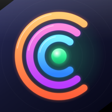

Conductor Privacy Policy
- Everything you put into Conductor (the feeds you follow, what you've read, your settings, and any orders or receipts) stays on your device. There are no accounts, no servers of ours and no cloud copy.
- We (the developer) never receive, see, store or sell your information.
- No advertising, no tracking and no analytics.
- Conductor connects only to the websites whose feeds you follow, and to devices you choose.
1. Who we are
Conductor is made by Daniel McGeorge, an independent developer based in South Africa ("we", "us"). For privacy questions or requests, email vegans_above4j@icloud.com.
2. What Conductor stores, and where
Conductor keeps the following only on your device, in the app's private storage:
| What | Examples |
|---|---|
| Feeds | The status pages and RSS feeds you follow, their posts, which posts you've read, and your customisations (names, alert choices, muted words, order) |
| Settings | The features you've turned on, menu bar and login choices, chosen audio outputs and per-device volume limits |
| Orders and receipts (optional) | Your item catalogue, venue details, saved slips, and handwriting or signatures drawn on a slip |
| Devices (optional) | Names of the Bluetooth devices and Baton hubs you connect, so Conductor can reconnect to them |
We have no access to any of it.
3. Feeds and the websites you follow
When you follow a status page or RSS feed, Conductor downloads it directly from that website, as a web browser would, and checks it again regularly, including in the background. The website sees an ordinary web request from your device (your IP address and that the request comes from Conductor), under its own privacy policy. Conductor doesn't send it anything else about you. Opening a post's full story takes you to that website in your browser.
Alerts about new posts and incidents are created on your device. They don't pass through any server of ours.
4. Permissions
- Notifications: to alert you about new incidents, resolutions and posts, and about water-meter alerts if you use a Baton hub.
- Bluetooth: only if you turn on a device feature (audio and lights, orders, Baton hub or water meter), to find and control the devices you choose.
- Local network: only for orders, to find receipt printers on your Wi-Fi and send slips to them.
- Accessibility (Mac, direct-download version only): only if you turn on mouse button remapping or wheel reversal.
Each permission is optional. You can change it at any time in your device's Settings. Conductor only asks for Bluetooth once you turn on a feature that needs it.
5. When information leaves your device
Only when you start it:
- Printing. Slips you print go straight to the printer you pick, directly or through your own Baton hub.
- Sharing. When you share a feed or a post, your device's share sheet opens and you choose who receives it.
- Baton hub push alerts. If you set up push alerts on your own Baton hub (for example through ntfy.sh or a webhook), the hub sends water alerts to the service you chose, under that service's terms.
6. Apple
Conductor is distributed through Apple's App Store. Apple may collect information such as downloads, and crash and usage reports if you have allowed this in your device settings. Apple handles that under its own privacy policy. When you allow sharing with app developers, Apple may give us aggregated, anonymous crash and usage statistics. These never include your feeds, orders or settings.
7. What we don't do
- We don't collect, sell, rent or share personal information.
- We don't use advertising or tracking SDKs, we receive no analytics, and we don't track you across other apps or websites.
8. Security
Your data is protected by your device's own security, such as your passcode, Face ID or Touch ID, and encryption. Wi-Fi details and settings changes for a Baton hub are only accepted over an encrypted, paired Bluetooth link.
9. Keeping and deleting your information
Your data stays until you delete it. You can unfollow feeds, delete saved slips and items in the app, or delete the app, which removes everything it stored. We hold no copy, so there's nothing for us to delete on our side.
10. Your rights (POPIA and similar laws)
Under South Africa's Protection of Personal Information Act (POPIA) and similar laws, you have rights to access, correct and delete your personal information. Because Conductor keeps everything on your device, you can do this directly in the app. If you have a question or concern, email us. You also have the right to lodge a complaint with South Africa's Information Regulator (inforegulator.org.za).
11. Children
Conductor isn't directed at children. We don't knowingly collect information from anyone, including children.
12. Changes to this policy
If this policy changes, we'll update this page and the effective date above. Significant changes will also be mentioned in the app's release notes.